The essence of Linear Algebra
3Blue1Brown出品，关于线性代数一些基本概念的本质的分析
Chap 1: Vectors
two understandings
- physics students perspective：不同维度空间里的有向线段，大小和方向
- cs students perspective：有实际意义的数字列表，进行数据操作
in geometry, make it rooted in the origin
two basic operations
- vector addition: 几何上强调路径的无关性，关注起点和终点
- multiplication by numbers: scaling 缩放，scaler and number are the same meaning（标量）
Chap 2: Span
span
Fix one of two scalars and let the other change freely, the tip of the resulting vector draws a straight line.
If both scalars change freely, the resulting vector can reach every point in the plane or all points in a linear or still the origin if they are zero vectors.
Seen from two angels, vector is a point or 有向线段
So the span of $\vec{v}$ and $\vec{w}$ is the set of all their linear combinations. 全部的线性组合构成的向量集合。
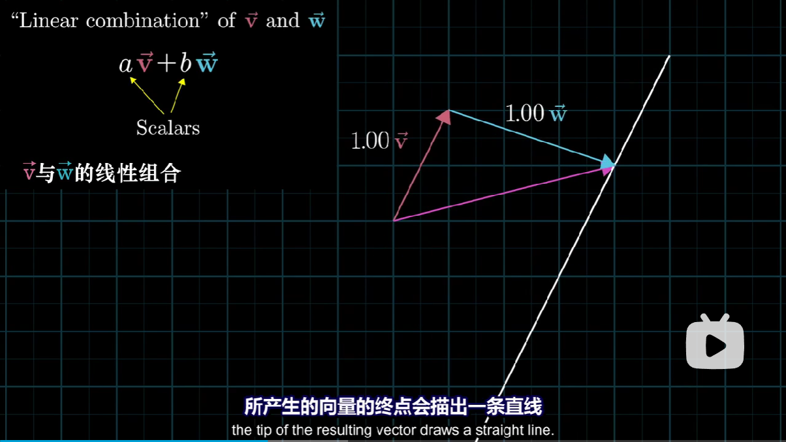
linear combination
span的维度和构成改span的线性无关的向量个数有关，即if each vector add new dimension to the span, they are said to be linear independent.
basis vectors
Definition: The basis of a vector space is a set of linear independent vectors that span the full space.
即互不线性相关的n个向量可以构成n维空间的基向量
- $a\vec{u}+b\vec{v}+c\vec{w}=0,\ if\ and\ only\ if\ a=b=c=0$
- $a\vec{u}+b\vec{v}+c\vec{w}=0,not\ a\vec{u}+b\vec{v}=\vec{w}$（任一向量不能再另外两个向量张成的的span里）
In coordinate systems, different basis vectors make different vector coordinates.
Chap 3: Linear transformations (particular important)
properties
- the origin remain fixes 原点不变
- lines remain lines 直线在变换后仍为直线，保持网格线平行并且等距分布
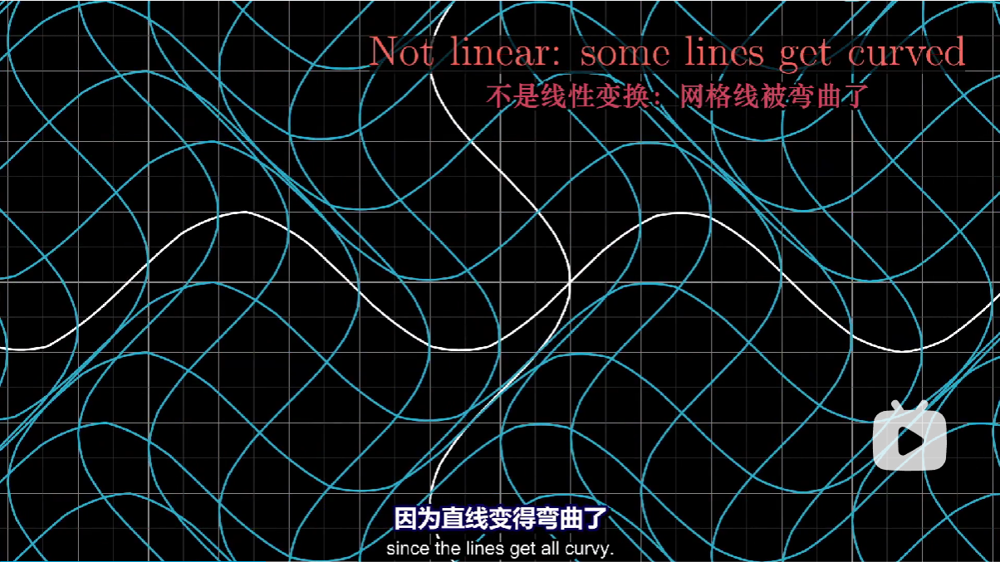
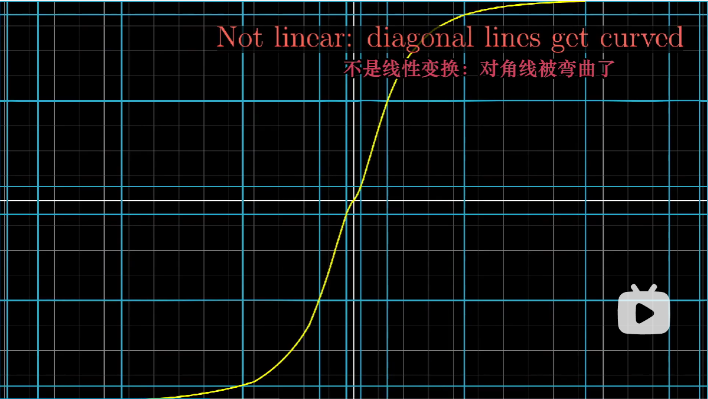
numerical description
for example: $\vec{v}=-1\vec{i}+2\vec{j}$
before transformation:
$\vec{i}=
\begin{bmatrix}
1 \\
0
\end{bmatrix},
\vec{j}=
\begin{bmatrix}
0 \\
1 \end{bmatrix},
\vec{v}=
\begin{bmatrix}
-2 \
2 \end{bmatrix}$
after transformation: $\vec{i}=\begin{bmatrix} 1\\ 3 \end{bmatrix}, \vec{j}=\begin{bmatrix} -2\\ 1 \end{bmatrix},\vec{v}=\begin{bmatrix} -5\\ -1 \end{bmatrix}$
so if $\begin{bmatrix} -1\\ 2 \end{bmatrix} \rightarrow \begin{bmatrix} x\\ y \end{bmatrix}$, such transformation can be defined generally.
一个二维的线性变换仅由4个数字完全确定（基向量变换后的坐标），其构造一个矩阵 called 2x2 Matrix $\begin{bmatrix}
a & b \
c & d
\end{bmatrix}$ 来表示这个变换的所有信息，$L(\vec{i})=\begin{bmatrix} a \\ c \end{bmatrix},L(\vec{j})=\begin{bmatrix} b \\ d \end{bmatrix}$
计算的原则如下图，几何意义：scaling then adding
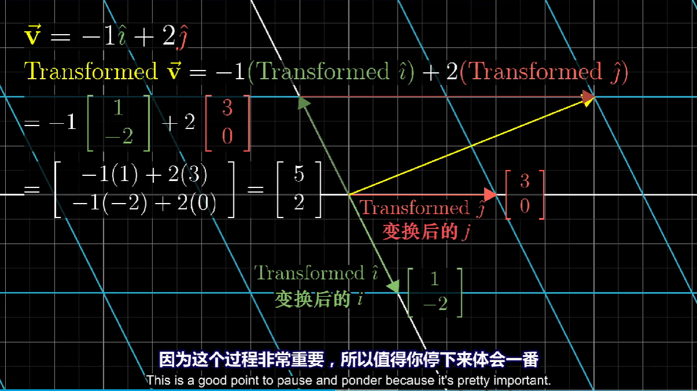
由此引出了矩阵乘法的计算方式，矩阵向量乘法就是计算线性变换作用于给定向量的一种途径。可以把见到的矩阵都理解为对空间的一种特殊变换。
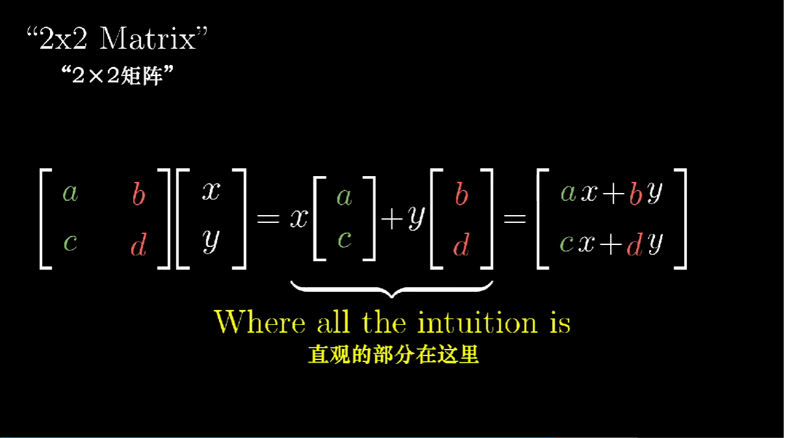
Chap 4: Matrix multiplication
geometrically
applying one transformation then another
Why to read from right to left?——see function $f(g(x))$!
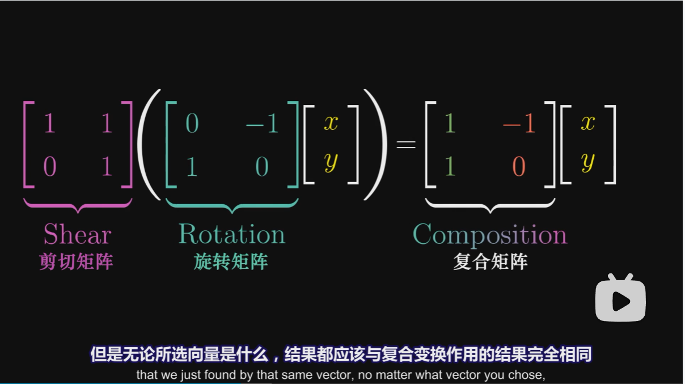
numerically
$M_1=\begin{bmatrix} 0&2\\1&0 \end{bmatrix},M_2=\begin{bmatrix} 1&-2\\1&0 \end{bmatrix},M_1M_2=\begin{bmatrix} a&b\\c&d \end{bmatrix}$
$\begin{bmatrix} 0&2\\1&0 \end{bmatrix} \begin{bmatrix} 1\\1 \end{bmatrix}=1\begin{bmatrix} 0\\1\end{bmatrix}+1\begin{bmatrix} 2\\0\end{bmatrix}=\begin{bmatrix} a\\c \end{bmatrix}$
$\begin{bmatrix} 1&-2\\1&0 \end{bmatrix} \begin{bmatrix} -2\\0 \end{bmatrix}=-2\begin{bmatrix} 1\\1\end{bmatrix}+0\begin{bmatrix} -2\\0\end{bmatrix}=\begin{bmatrix} b\\d \end{bmatrix}$
$\Rightarrow \begin{bmatrix} a&b\\c&d \end{bmatrix}\begin{bmatrix} e&f\\g&h\end{bmatrix}=\begin{bmatrix} ae+bg&af+bh\\ce+dg&cf+dh \end{bmatrix}$
properties
$M_1M_2 \neq M_2M_1$ (rotate then shear vs shear than rotate) $\begin{bmatrix} 1&0\\1&1 \end{bmatrix} \begin{bmatrix} 0&-1\\1&0 \end{bmatrix}$
Associativity: $(AB)C=A(BC)$ （same three transformation in the same order）
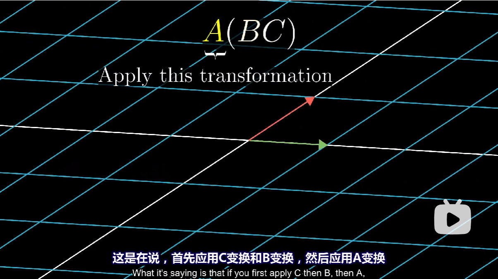
Chap 5: determinant
The purpose of computation is insight, not numbers.
representation
using determinant to measure how much it stretches or squishes the space（the change of unit square area or unit volume）
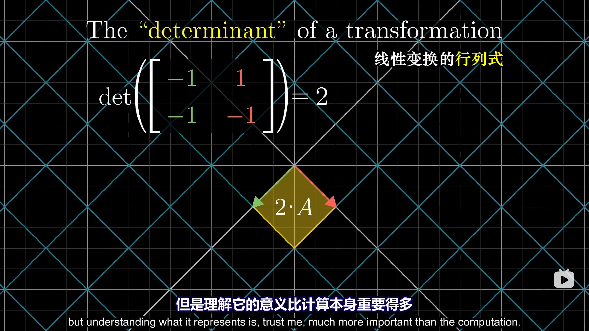
geometrically
if the determinant is zero:
- the basic vectors of the matrix are linear combination
- the transformation can squish everything into a smaller dimension
if the determinant is negtive:
- orientation flipping（空间翻转，基向量的空间次序变化，顺时针vs逆时针，左手定则vs右手定则）
- the absolute value still tells the scaling factor
2D——scaling factor of area
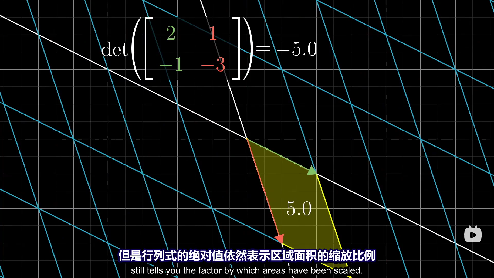
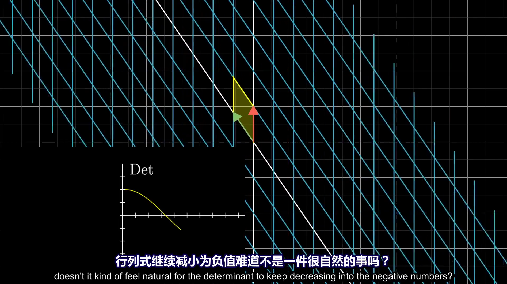
3D——scaling factor of parallelepiped volume
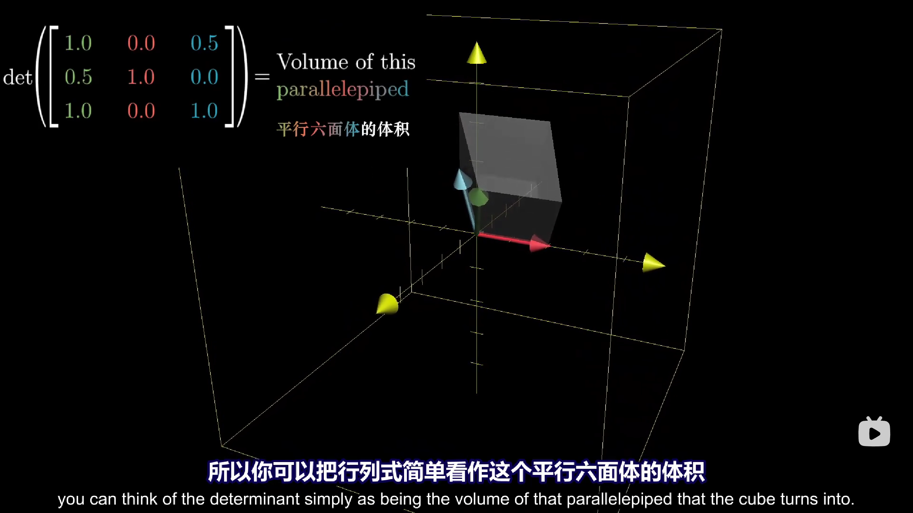
numerically
$det(\begin{bmatrix} a&b\\c&d \end{bmatrix})=ad-bc$
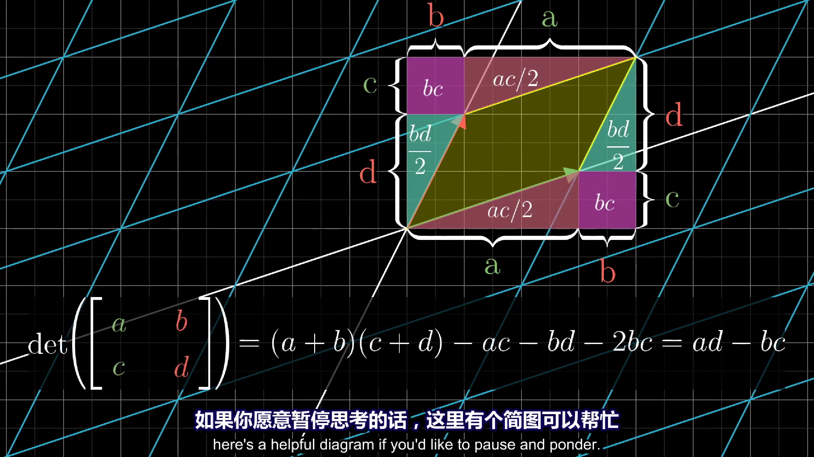
$det(\begin{bmatrix} a&b&c\\d&e&f\\g&h&i \end{bmatrix})=a\ det(\begin{bmatrix} e&f\\h&i \end{bmatrix})-b\ \begin{bmatrix} d&f\\g&i \end{bmatrix}+c\begin{bmatrix} d&e\\g&h \end{bmatrix}$
thoughts
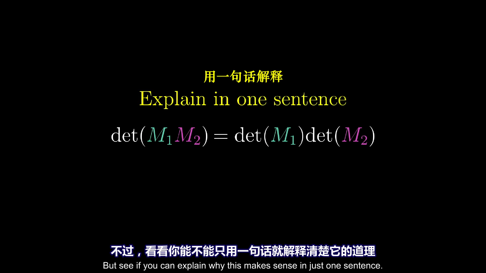
strict proof:
#
Ask the right question is harder than to answer it. —Georg Cantor
Chap 6: Inverse matrices、Rank、Null space
inverse matrices
$A\vec{x}=\vec{v}$ ,x进行矩阵A表示线性变换后，向量x变为向量v，求向量x，即做一个A的逆变换（$A^{-1}A=E$, 恒等变换called identity transformation）
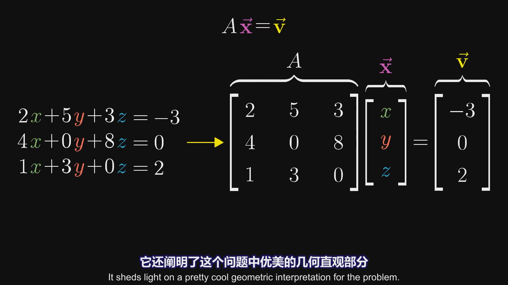
$if\ det(A) \neq0$
$\Rightarrow AA^{-1}\vec{x}=A^{-1}\vec{v}=\vec{x}$，one unique solution
$if\ det(A)=0$
$\Rightarrow$ the space is squished and $A^{-1}$ doesn’t exist for low dimension can’t unsquish to high dimension. 有多解或无解两种情况
- in 2D space，如若线性变换后，空间被压缩为一条直线，且 $\vec{v}$ 正好在压缩后的直线上，那么有多解；若不在，则无解
- in 3D space, 压缩后是一条直线 $\vec{x}$ 有解对于 $\vec{v}$ 的条件比是压缩后是一个平面的条件更为苛刻
Rank
the dimension of the column space
Column space: Set of all possible outputs $A\vec{v}$ —— the span of columns
full rank: rank(A) equals the number of columns
zero vector is always in the column space
$eg. Rank(\begin{bmatrix} 1&-2\\2&-4 \end{bmatrix})=1,Rank(\begin{bmatrix} 2&-2\\2&-4 \end{bmatrix})=2,Rank(\begin{bmatrix} 2&-1&1\\2&-1&0\\1&-0.5&-4 \end{bmatrix})=2$
Null space
the set of all vectors which become the null vector after a certain linear transformation
Chap 7: Dot products、Duality
dot products
numerically computation: $(1,2)\cdot(3,4)=1 \times3+2\times4$
geometrically intuition: projection with symmetry
duality
Duality $\Leftrightarrow$ Natural-but-surprising correspondence
first, introduce a lineat transformation: $\begin{bmatrix} 1&2 \end{bmatrix} \begin{bmatrix} 3\\4 \end{bmatrix}=\begin{bmatrix} 1\times3+2\times4 \end{bmatrix}$
Matrix-vector product corresponds to Dot product. Why?
如果把一个二维空间压缩成一维空间（直线），这个线性变换的矩阵如何求呢？即我们要求基向量经过变换后在数轴上的一维坐标，先找一个单位向量$\vec{u}=\begin{bmatrix} u_x\\u_y \end{bmatrix}$，且落在目标直线上。
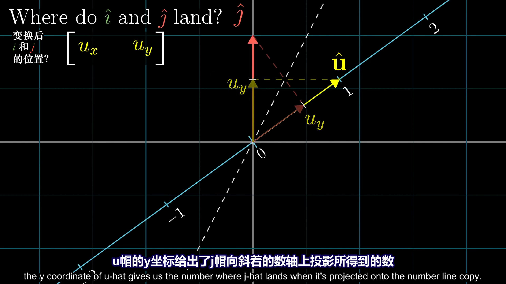
According to some subtle symmetry, we can get that the linear transformation represent as $\begin{bmatrix} u_x&u_y \end{bmatrix}$. So because of the similar computing method and geometric meaning, we can relate the projection to the linear transformation. Projecting matrix mutiply by a given vector equals the dot product of a dual vector and the given vector.
这也解释了与单位向量的点积等于将向量投影到单位向量所在直线上的长度。若不是单位向量，可理解成同方向单位向量的缩放，结果相差一个scalar。
Chap 8: Cross products
Every dimension is special. ——Jeff Lagarias
2D and 3D vector’s cross product. Compute magnitude by using determinant and direction using Right hand grip rule
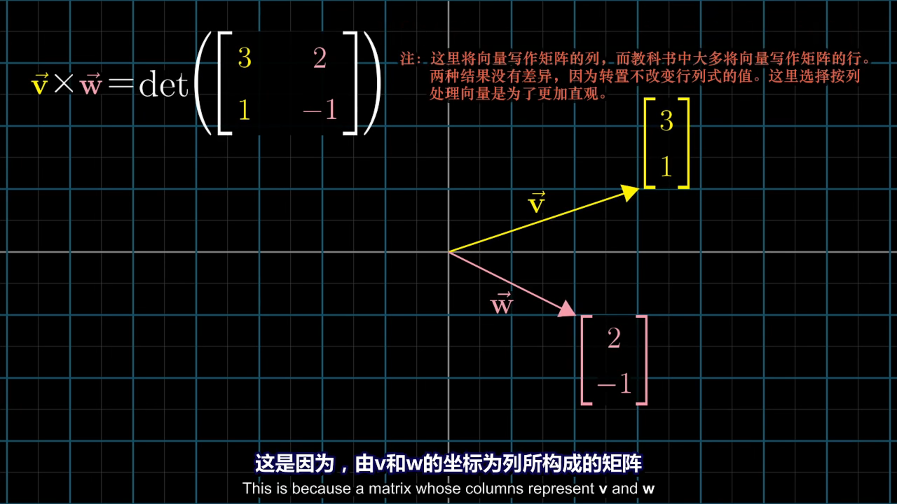
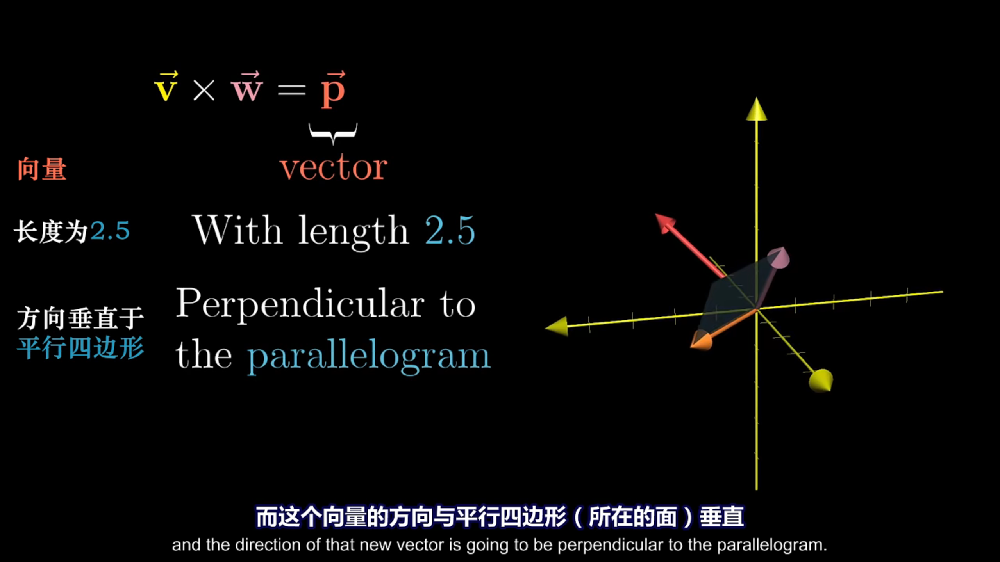
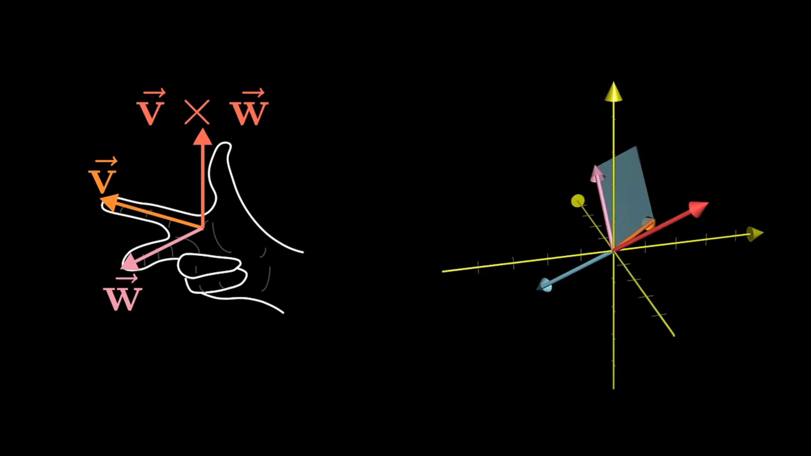
Chap 9: Cross products as transformation
Not to take glory in the difficulty of a proof: difficulty means we have not understand. The ideal is to be able to paint a landscape in which the proof is obvious.
Introduction
First, define a certain linear transformation from 3D space to the number line taking the determinant of a matrix in terms of $\vec{v},\vec{w}$.
$f(\begin{bmatrix} x\\y\\z \end{bmatrix})=det(\begin{bmatrix}x&v_1&w_1\\y&v_2&w_2\\z&v_3&w_3 \end{bmatrix})$ (3D to 1D represented as a 1x3 matrix )
$\Leftrightarrow \begin{bmatrix}p_1&p_2&p_3 \end{bmatrix} \begin{bmatrix}x\\y\\z \end{bmatrix}=det(\begin{bmatrix}x&v_1&w_1\\y&v_2&w_2\\z&v_3&w_3 \end{bmatrix})$ (1)->（根据线性变换和向量的对偶性）
$\Leftrightarrow \begin{bmatrix}p_1\\p_2\\p_3 \end{bmatrix}\cdot \begin{bmatrix}x\\y\\z \end{bmatrix}=det(\begin{bmatrix}x&v_1&w_1\\y&v_2&w_2\\z&v_3&w_3 \end{bmatrix}) $ (2)
$\Leftrightarrow p_1x+p_2y+p_3z=x(v_2w_3-v_3w_2)+y(v_3w_2-v_1w_3)+z(v_1w_2-v_2w_1)$ (3)
$\Leftrightarrow \begin{bmatrix}p_1\\p_2\\p_3 \end{bmatrix}=\begin{bmatrix}v_2w_3-v_3w_2\\v_3w_2-v_1w_3\\v_1w_2-v_2w_1 \end{bmatrix}$ (4)
而由于 $\vec{v} \times \vec{w}=\vec{p}$ ，根据推导过程，引导我们使用以下的行列式方法进行计算。
$\Rightarrow \vec{v} \times \vec{w}=det(\begin{bmatrix}\vec{i}&v_1&w_1\\ \vec{j}&v_2&w_2\\ \vec{k}&v_3&w_3 \end{bmatrix})$
Properties
什么样的 $\vec{p}$ 能满足9.1中定义的等式呢，我们来探究一下它的性质（联系叉积的几何意义）就能回答以下的两个问题了。
Q1: Why cross product’s numerical magnitude is the area of the parallelogram which the two vectors make?
Q2: Why cross product’s direction is perpendicular to the plane which the two vectors span?
观察9.1（2），左边看作用投影计算的点积，右边看作是以$\vec{v} 、\vec{w}$为底面的平行六面体的体积。（同时可以理解为混合积——叉积再点积得到体积）Thinking geomatrically，若对于任一（x,y,z）都成立， $\vec{p}$ 必须垂直于 $\vec{v}和\vec{w}$ 构成的平面，大小等于 $\vec{v}和\vec{w}$ 构成的平行四边形的面积。
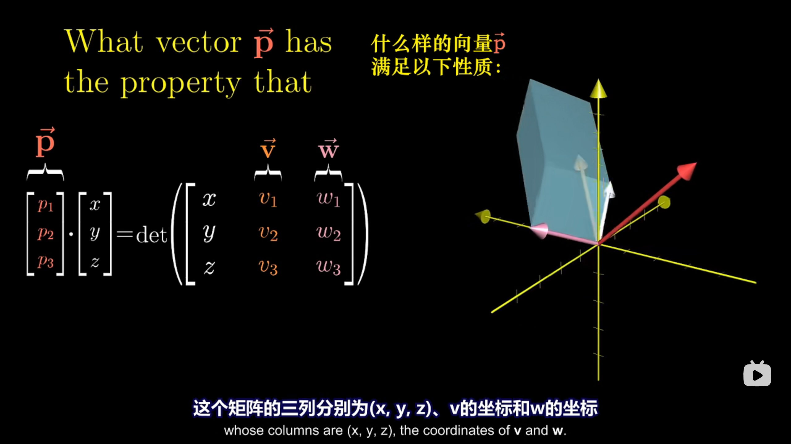
Chap 10: change of basis
Mathematics is the art of giving the same to different things.
Function
Basis matrix translate A’s labguage to B’s when representing vectors or doing other operation.
Representation
Precondition： the same vectors in space can use different words and numbers to describe. Using coordinate to represent a vector depends on the basis vectors chosen, usually, implicit assumptions: basis vectors like $\begin{bmatrix} 1 \\ 0 \end{bmatrix} & \begin{bmatrix} 0 \\1 \end{bmatrix}$ in Rectangular Coordinates.
Application: An expression like $A^{-1}MA$ suggests a mathematical sort of empathy(转移). composition of three matrices gives us the transformation matrix in A’s language. It takes a vector in A’s language and spits out the transformed version of that vector in her language.
- $M$: a kind of transformation
- $A\ & \ A^{-1}$: the shift in perspective
$eg.$ 已知A坐标系下 $\vec{v}=\begin{bmatrix} 1\\2 \end{bmatrix}$, A的基变换矩阵$\begin{bmatrix} -1 & 2 \\ 1 & 0 \end{bmatrix}$, 求经过顺时针旋转90°后$\vec{v}$ 为多少？
Question
Why we care about coordinate systems? Next video: Eigenvectors and eigenvalues.
#